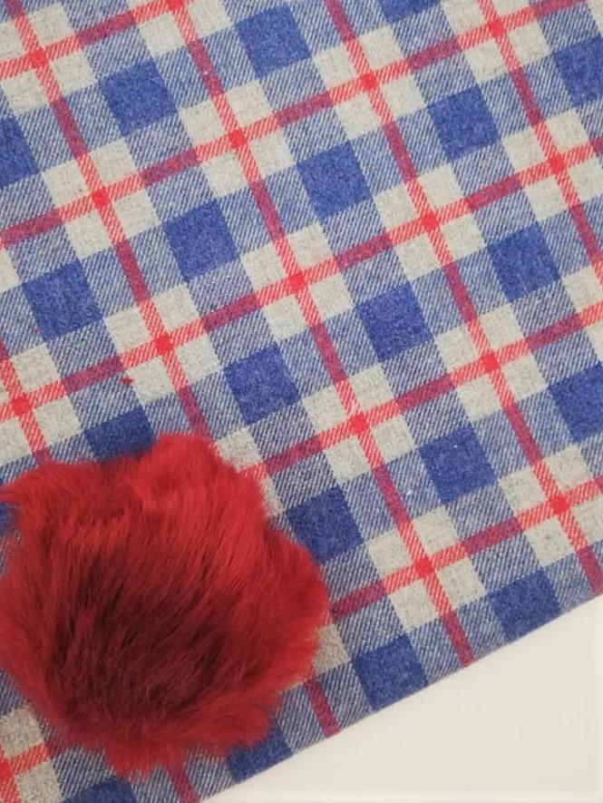
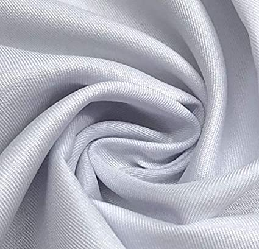

La tela viyela o villela es un tejido hecho originalmente de algodón y lana y posee un grosor que lo hace ideal para la época de invierno. Su nombre surge de la ciudad en la que nació, convirtiéndose en una marca registrada por la firma británica que comenzó a fabricarla artesanalmente en 1784 y que acabó vendiendo también blusas, camisas y batas ante el éxito cosechado por este tejido
El tejido de sarga presenta un suave patrón diagonal que le confiere una interesante y característica textura.La técnica que se emplea para trenzar la sarga hace que este tejido sea ligeramente grueso y resistente, por lo que resulta idóneo para confeccionar ropa de abrigo como gabardinas o saharianas o incluso prendas de trabajo, mantas o los kilt típicos de la indumentaria masculina escocesa.
La suavidad y ligereza de nuestra tela voile (qué podrás encontrar como Cupid & Voile), junto a su acabado semitransparente, permiten que sea un tejido válido para confeccionar prendas superiores, tanto femeninas como masculinas, destacando los vestidos, las camisas, las blusas y los pareos. Además, al estar compuesto íntegramente por algodón, también puede utilizarse para ropa de niño y de bebé.